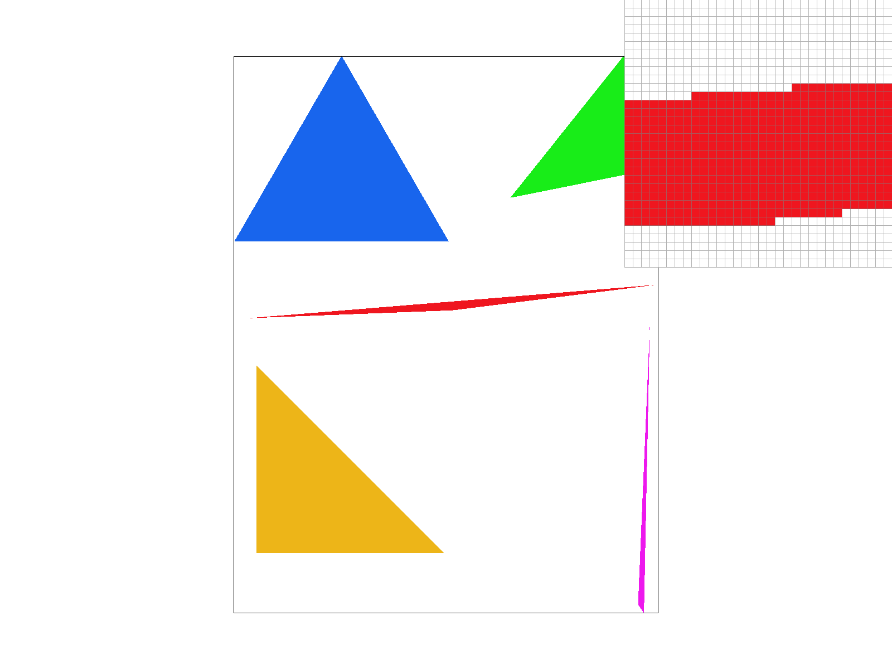
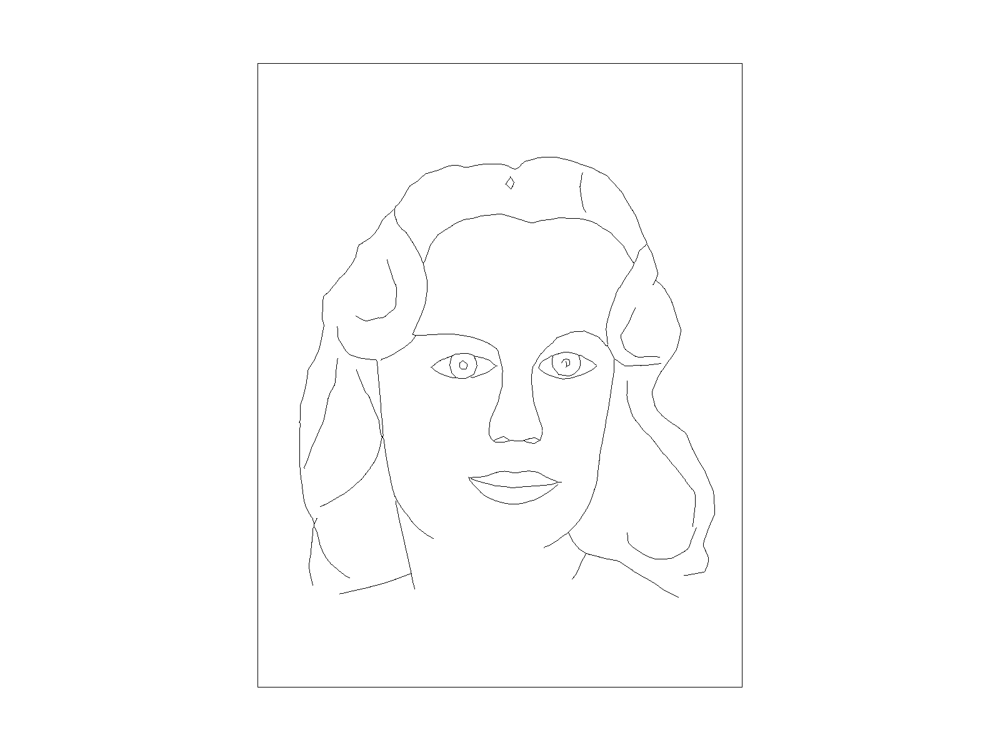
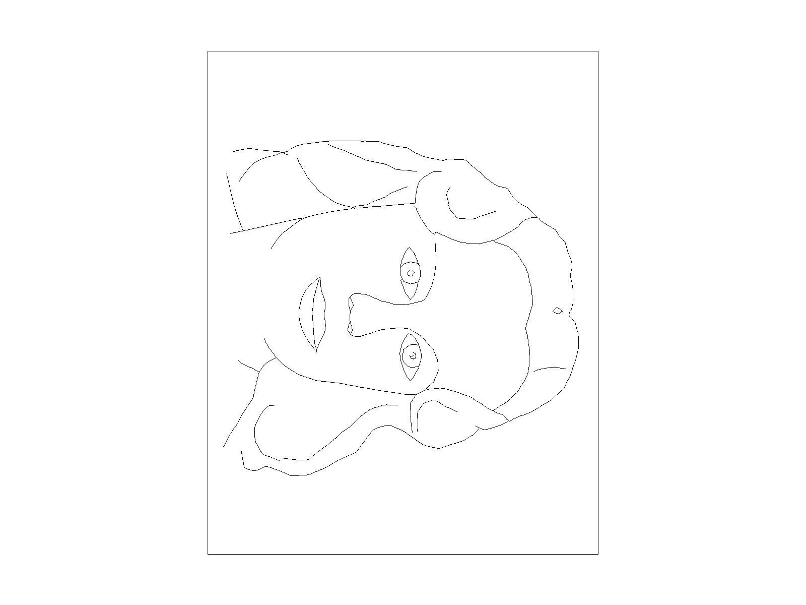
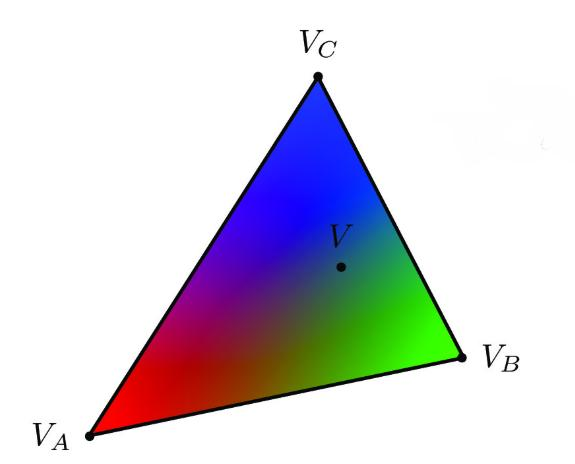
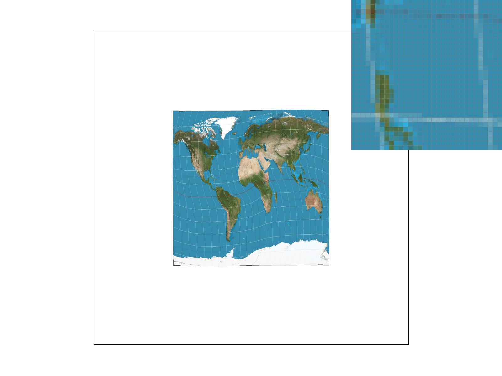

Overview
We built a rasterizer that converts SVG geometry into pixels. Starting with triangle coverage tests, we added supersampling, geometric transforms, barycentric interpolation, texture filtering, and mipmap-level selection. We also optimized the flat-color rasterizer and added a keyboard shortcut for rotating the view.
The project made the stages of the pipeline concrete: transforms determine where geometry appears, coverage tests determine which samples belong to each triangle, and interpolation and filtering determine their colors. The final image depends on all of these stages working together.
We implemented the extra credits for Task 1 and Task 3.
Triangle rasterization
We first compute the triangle’s axis-aligned bounding box and clip it to the framebuffer. Within that region, line_test evaluates the signed cross product for each of the three directed edges. A sample lies inside the triangle when all three signs agree, including points on an edge. Accepting either sign convention handles both clockwise and counterclockwise vertex order. Covered samples receive the triangle’s color; uncovered samples retain their previous value.
Bounding-box cost. The basic implementation tests only samples inside the triangle’s bounding box, rather than scanning the entire framebuffer. Each candidate requires three constant-time edge tests, so its work is proportional to the box’s pixel area times the sample rate. This is the bounding-box algorithm used as the baseline for the optimization below.

basic/test4.svg with the default viewing parameters (1 sample/pixel). The
pixel inspector is centered on the thin red triangle, whose edges show clear staircase aliasing.Extra Credit
I optimized the flat-color triangle rasterizer by limiting each pixel row to the horizontal span touched by the triangle. For each pixel in that span, I use precomputed edge coefficients to reject pixels completely outside the triangle or fill all samples of pixels completely inside it. Only boundary pixels need the original per-sample edge tests. I also traverse rows in framebuffer order and clip drawing to the framebuffer bounds. The original bounding-box implementation remains available for comparison.
With LLM's help, I benchmarked 103 deterministic triangles, including long, thin triangles, in a 256 × 256 framebuffer. Each result is the median of five trials; each trial drew the same triangles five times in a Release build. Timing excludes clearing and resolving the framebuffer. I compared the two implementations on each triangle individually and checked their complete output at sample rates 1, 4, 9, and 16. All outputs matched.
| Samples per pixel | Basic | Optimized | Speedup |
|---|---|---|---|
| 1 | 21.18 ms | 8.17 ms | 2.59× |
| 4 | 59.18 ms | 13.07 ms | 4.53× |
| 9 | 114.75 ms | 23.17 ms | 4.95× |
| 16 | 187.86 ms | 29.89 ms | 6.28× |
I also rendered all 32 supplied SVG files with both implementations at 1024 × 1024. Their PNG outputs matched exactly.
Supersampling
A single sample at a pixel’s center makes coverage binary: it either hits the triangle or misses it. That decision can poorly represent a pixel that is only partly covered, producing jagged edges or gaps in thin triangles. Supersampling estimates coverage by testing several positions within each pixel and averaging their colors.
Sample storage. We use a resizable sample buffer containing \(W\times H\times S\) colors, with each pixel’s samples stored contiguously. For a sample rate \(S=n^2\), we place samples at the centers of an \(n\times n\) grid within each pixel. Each covered sample is written independently. Resolving the buffer averages those \(S\) colors into one output pixel.
The rasterizer now writes to individual sample locations instead of directly assigning one color to each pixel. Changing the framebuffer size or sample rate resizes the sample buffer. A final resolve pass averages each pixel’s samples before converting the result to the display framebuffer.
Results. At one sample per pixel, thin portions of the triangle are frequently missed, leaving visible gaps. Four samples capture partial coverage and produce intermediate colors along the boundary. Sixteen samples use a denser grid, giving smoother edges and a more gradual fade near the narrow tip. The improvement comes from estimating coverage more accurately, rather than changing the triangle’s geometry.
Transforms
We posed Cubeman as if it were waving. Translation, scaling, and rotation are represented with homogeneous transformation matrices, allowing the body parts to be positioned through composed transforms. We adjusted the arm and elbow separately, including rotations of −30° at the right arm and a further −75° at the elbow, to raise the hand while keeping it attached to the body.
Extra Credit
I implemented the R key as rotating 90 degrees clockwise by adding a counter to record the presses. I added a rotation matrix between the SVG-to-NDC and NDC-to-screen transforms. Translating the NDC center to the origin before rotation, then translating it back, keeps the image centered.


Barycentric coordinates
Barycentric coordinates express a point as a weighted combination of a triangle’s three vertices. For a point inside the triangle, the weights are nonnegative and sum to one:
\[\mathbf V=\alpha\mathbf V_A+\beta\mathbf V_B+\gamma\mathbf V_C,\qquad\alpha+\beta+\gamma=1.\]
The same weights interpolate a vertex attribute, such as color:
\[C(\mathbf V)=\alpha C(\mathbf V_A)+\beta C(\mathbf V_B)+\gamma C(\mathbf V_C).\]At a vertex, its own weight is one and the other two are zero. Along the opposite edge, that vertex’s weight is zero. Across the interior, the three weights vary linearly, giving the RGB triangle its smooth color gradient.

basic/test7.svg with default viewing parameters and one sample per pixel.Texture sampling
Texture sampling determines a color for a continuous texture coordinate. A screen-space sample generally maps between texel centers, so the renderer needs a rule for reconstructing a color from the discrete texture.
For each covered sample, we compute barycentric weights and interpolate the triangle’s texture coordinates: \[\mathbf{uv}=\alpha\mathbf{uv}_A+\beta\mathbf{uv}_B+\gamma\mathbf{uv}_C.\] We then pass the interpolated coordinate to the texture sampler. This interpolates texture coordinates first; the texture lookup supplies the color.
Nearest-neighbor sampling returns the color of a single nearby texel. Bilinear sampling reads the four texels surrounding the coordinate and blends them according to the fractional horizontal and vertical offsets. Bilinear filtering smooths transitions between texels but can soften fine details. It uses four texel reads instead of one; this does not imply an exact fourfold increase in total rendering time.

With one camera sample per pixel, nearest-neighbor sampling gives the texture sharper but more discontinuous transitions. Bilinear sampling produces smoother lines by blending neighboring texels. At sixteen samples per pixel, both methods become smoother because the renderer averages multiple texture lookups across each pixel. In these examples, the additional improvement is less pronounced for bilinear filtering because it already smooths the local texel transitions.
The difference is particularly visible when a texture is magnified: nearest-neighbor sampling reveals block-shaped texels, while bilinear filtering blends across them. Fine text and high-contrast lines make these transitions easy to see. Under strong minification, however, blending only four texels is not enough to filter the much larger texture footprint; that motivates mipmapping.
Mipmap sampling
Level sampling chooses a resolution from a mipmap pyramid. Each successive level halves the texture’s width and height, storing a prefiltered version of the previous level. When many texels project into one screen pixel, sampling a coarser level suppresses high-frequency detail that the output cannot represent. Sampling only the finest level in that situation can produce moiré patterns and unstable detail.
We estimate the texture footprint by comparing the UV coordinate at a screen sample with the coordinates one pixel away in the horizontal and vertical directions. After scaling those differences into texel units, we take the larger vector length \(\rho\) and compute \[D=\log_2\bigl(\max(\rho,1)\bigr).\] The result is clamped to the available mipmap range. L_ZERO always uses level zero; L_NEAREST rounds \(D\) to one level; L_LINEAR blends the two neighboring levels. The selected pixel-sampling method is then applied within each chosen level.
Speed. Nearest-neighbor lookup reads one texel, while bilinear lookup reads four. Linear level sampling evaluates two levels and blends their results, adding work beyond a single-level lookup. Supersampling repeats coverage and shading work for each subpixel sample, so a high sample rate can be considerably more expensive. These methods can be combined; they are not mutually exclusive alternatives.
Memory. Nearest and bilinear filtering use the same texture storage. A full 2D mipmap pyramid occupies approximately \(1+\tfrac14+\tfrac1{16}+\cdots=\tfrac43\) times the base texture, or about one-third additional storage. The supersample buffer grows with \(S\), so sixteen samples per pixel require sixteen times the color-sample storage of a single-sample buffer, not sixteen times the memory of the entire program.
Antialiasing. Supersampling improves geometric coverage and averages texture evaluations, but a finite sample grid can still miss high-frequency details. Bilinear filtering smooths magnified textures; mipmap-level selection is especially useful for minified textures. The comparisons below vary level selection and within-level filtering independently. Using an appropriate mipmap level reduces noisy distant patterns, while bilinear filtering smooths the remaining texel transitions.